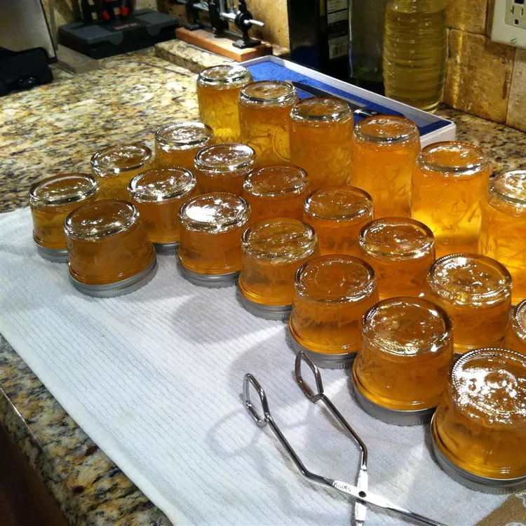

Yuzu Marmalade

Ingredients
- 7 small yuzu
- 1 large lemon
- 2 1/2 cups water
- 1/8 teaspoon baking soda
- 1 package fruit pectin
- 1/2 teaspoon unsalted butter
- 5 1/2 cups white sugar
Steps
- Inspect canning jars for cracks and rings for rust, discarding any defective ones. Immerse in simmering water until filling is ready. Wash new, unused lids and rings in warm soapy water
- Remove all pith from yuzu and lemon peels by scraping it off with a spoon
- Cut peels into thin slivers with kitchen shears. Juice yuzu flesh into a strainer or cheesecloth set over a bowl; set aside
- Mix peels, water, and baking soda in a large saucepan and bring to a boil. Reduce heat to medium-low. Cover and simmer, stirring occasionally, for 20 minutes. Add yuzu juice. Cover and simmer for an additional 10 minutes.
- Measure exactly 4 cups of the yuzu juice mixture into a separate pot. If you are a little short because yuzu juice is hard to extract in the first place, add water to make up for the amount that is missing
- Stir pectin into the pot and add butter to reduce foaming. Bring the mixture to a full rolling boil-one that does not stop bubbling when stirred. Stir constantly. Add sugar and return to a rolling boil while stirring constantly. Boil for exactly 1 minute. Remove from heat. Skim any and all foam off with a metal spoon.
- Ladle immediately into prepared jars and fill to within 1/8 inch of the top of the jar. Wipe jar rims and threads. Cover with two-piece lids. Screw bands tightly.
- Place a rack in the bottom of a large stockpot and fill halfway with water. Bring to a boil and lower jars 2 inches apart into the boiling water using a holder. Pour in more boiling water to cover jars by at least 1 inch. Bring to a rolling boil, cover, and process for 10 minutes.
- Remove the jars from the stockpot and let rest, several inches apart, for 12 to 24 hours. Press the center of each lid with a finger to ensure the lid does not move up or down. Remove the rings for storage and store in a cool, dark area. May take up to 2 weeks to set